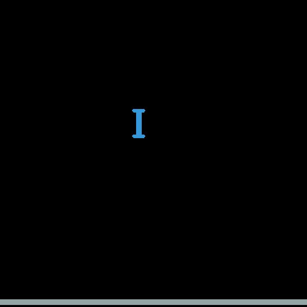

Belli şekildeki objelerin gerçek dünyada nasıl davranacağını merak
ediyorsak simülasyon çözümüne başvurabiliriz. 2 boyutta bu tür
simülasyonları pymunk ıle rahatça yapabiliyoruz. Bu motor arka
planda chipmunk adlı C++ ile yazılmış bir diğer motora arayüz
sağlıyor. Kurmak için
pip install pymunk
pymunk ile çubuksal, küresel, vs türünden objeler yaratabiliriz, bir
hatta pek çok farklı parçaları birbirine yapıştırmak ta mümkün. Sert
zemin yaratabiliriz. Objeleri çapıştırmak, ya da istediğimiz objelere
istediğimiz taraflarından dış kuvvet uygulamak mümkün. Yere düşen
objeler gerçek dünyada tahmin edilebilecek şekilde davranırlar..
Test etmek için üst ve alt kısımlarından kuvvet uygulanan bir çubuk örneği şurada.
Bu çubuğu bir dualkopter gibi düşünebiliriz, Alt üst ok tuşları ile uygulanan kuvvet arttırılıp azaltılabiliyor, ve sağ sol ok tuşları ile kuvvetin acısı değiştiriliyor, [1] örneğindeki durumun simülasyonu gibi düşünülebilir.
Fakat dikkat edersek kopter hassas. Güç uygulandığı anda sağa sola yalpalanması çok kolay. Burada problem [1]'deki durumun iyi simüle edilmemiş olması. Simülasyon kuvveti tek noktaya uyguluyor, fakat [1] kopterine bakarsak, pervaneler objenin gövdesinden daha geniş, ve aerodinamik kurallarına göre pervanenin kuvvet kapsadığı tüm alan için geçerlidir. O zaman yeni bir simülasyon ile iki ufak çubuğu alttan üstten yapıştırarak, ve kuvveti tüm ufak çubuklara uyguluyarak yapılabilir.
import pymunk, pygame, random, sys, numpy as np, pyglet
from pymunk.pygame_util import DrawOptions
width = 600
height = 600
class Dualcopter:
def __init__(self, position, space):
self.mass = 1
self.shape = pymunk.Poly.create_box(None, size=(10, 50))
self.moment = pymunk.moment_for_poly(self.mass, self.shape.get_vertices())
self.body = pymunk.Body(self.mass, self.moment)
top = pymunk.Segment(self.body, (-10, 25), (10, 25), 3) # 2
bottom = pymunk.Segment(self.body, (-10, -25), (10, -25), 3) # 2
self.shape.body = self.body
self.shape.body.position = position
space.add(self.shape, self.body, top, bottom)
class Ground:
def __init__(self, space):
self.body = pymunk.Body(0, 0, body_type=pymunk.Body.STATIC)
self.shape = pymunk.Poly.create_box(self.body, (width, 10))
self.shape.body.position = (width//2, 10)
space.add(self.shape, self.body)
def main():
pygame.init()
screen = pygame.display.set_mode((width, height))
pygame.display.set_caption("The ball drops")
clock = pygame.time.Clock()
draw_options = DrawOptions(screen)
space = pymunk.Space()
space.gravity = 0, -100
x = random.randint(120, 380)
ground = Ground(space)
copter = Dualcopter((x, 550), space)
thrust_angle = 0
thrust = 0
i = 0
while True:
i += 1
print ('================')
print ('velocity', copter.shape.body.velocity)
print ('angle', copter.shape.body.angle)
print ('rv', copter.shape.body.rotation_vector)
#if i%20==0: pygame.image.save(screen, "/tmp/out-%d.jpeg" % i)
for event in pygame.event.get():
if event.type == pygame.QUIT:
sys.exit(0)
elif event.type == pygame.KEYDOWN:
print ('thrust',thrust,'angle',thrust_angle)
if event.key == 274:
print ('down')
thrust -= 20
elif event.key == 273:
print ('up')
thrust += 20
elif event.key == 275:
print ('right')
thrust_angle += 10
elif event.key == 276:
thrust_angle -= 10
print ('left')
T = thrust / 6.0
copter.shape.body.apply_force_at_local_point((0, T), (-10, -25))
copter.shape.body.apply_force_at_local_point((0, T), (-5, -25))
copter.shape.body.apply_force_at_local_point((0, T), (5, -25))
copter.shape.body.apply_force_at_local_point((0, T), (10, -25))
F = (T*np.sin(np.deg2rad(thrust_angle)), T*np.cos(np.deg2rad(thrust_angle)))
copter.shape.body.apply_force_at_local_point(F, (-10, 25))
copter.shape.body.apply_force_at_local_point(F, (-5, 25))
copter.shape.body.apply_force_at_local_point(F, (5, 25))
copter.shape.body.apply_force_at_local_point(F, (10, 25))
screen.fill((0, 0, 0))
space.debug_draw(draw_options)
space.step(1/50.0)
pygame.display.update()
clock.tick(50)
if __name__ == '__main__':
sys.exit(main())

Kaynaklar
[1] Mcclay, Dualkopter, https://youtu.be/b14_XQ5nd2A